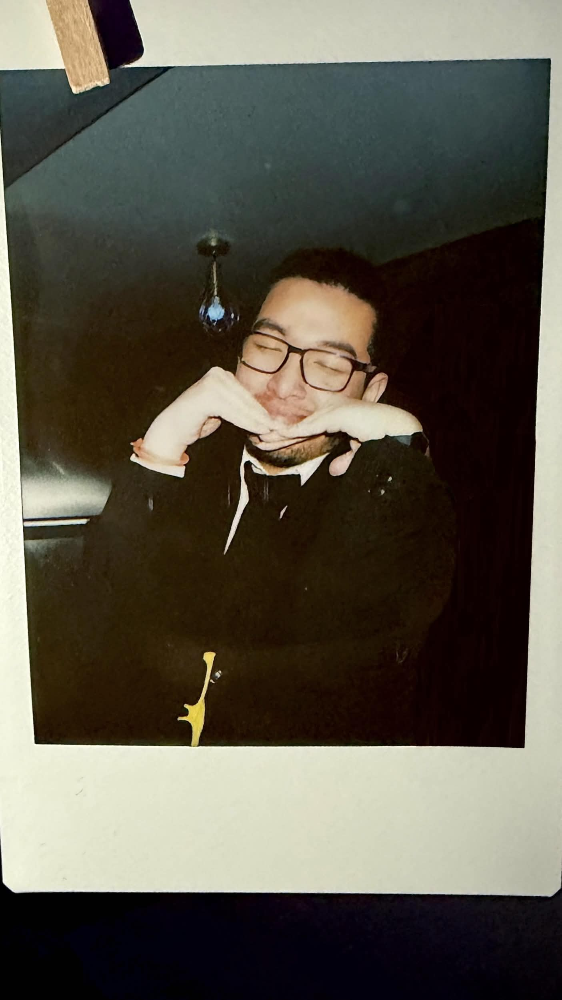
Développeur qui aime faire joujou avec des technos et qui adore son association par dessus tout.
Après l'obtention du bac, j'ai choisi Epitech
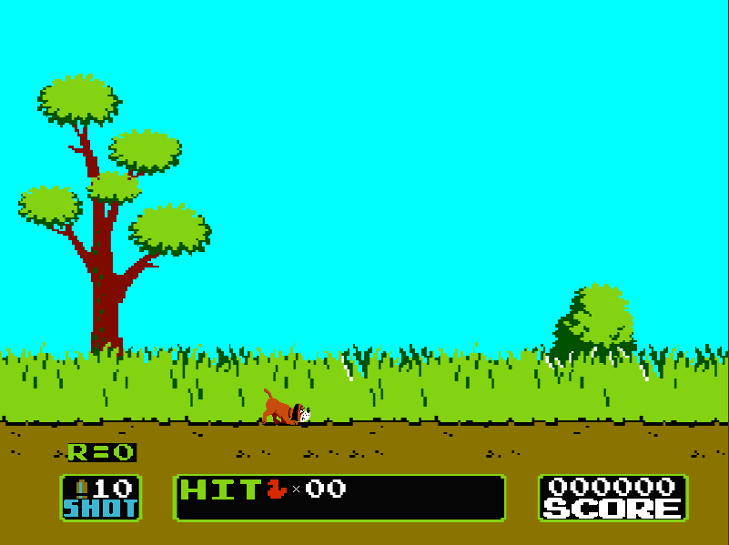
Développement d'un jeu vidéo en 2D reprenant le concept du célèbre Duck Hunt, entièrement codé en C avec la bibliothèque graphique CSFML. Ce projet m'a permis de maîtriser la gestion d'une boucle de jeu, le rendu des sprites, les animations fluides, la détection des collisions et les interactions à la souris.
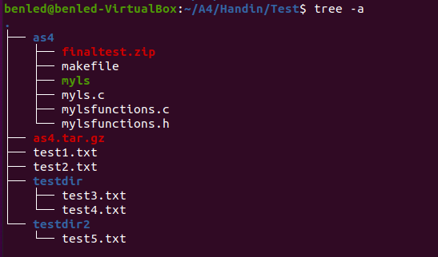
Développement d'une réplique de la commande système Unix permettant de lister les fichiers et dossiers, avec la gestion des droits, des formats longs (-l) et du tri récursif. Ce projet m'a permis de maîtriser les appels système et l'interaction directe avec le système de fichiers.
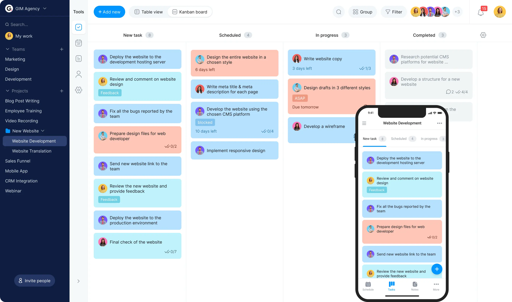
Création d'une application web dynamique de gestion de tâches (To-Do List) permettant de créer, modifier, trier et suivre ses objectifs au quotidien. Ce projet m'a permis de travailler sur l'ergonomie de l'interface utilisateur (UI), la gestion des états en temps réel et les bases du développement web moderne.
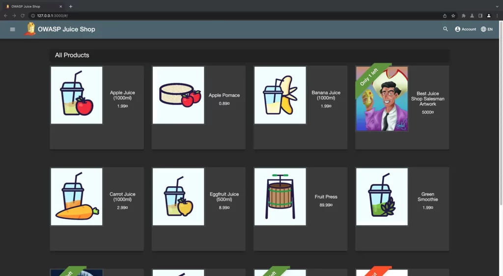
Une initiation pratique à la cybersécurité à travers la résolution de défis OWASP visant à identifier et exploiter des failles de sécurité web. Ce projet m'a permis de comprendre les mécaniques d'attaque (injections, failles) et d'acquérir les bons réflexes pour développer des applications sécurisées.
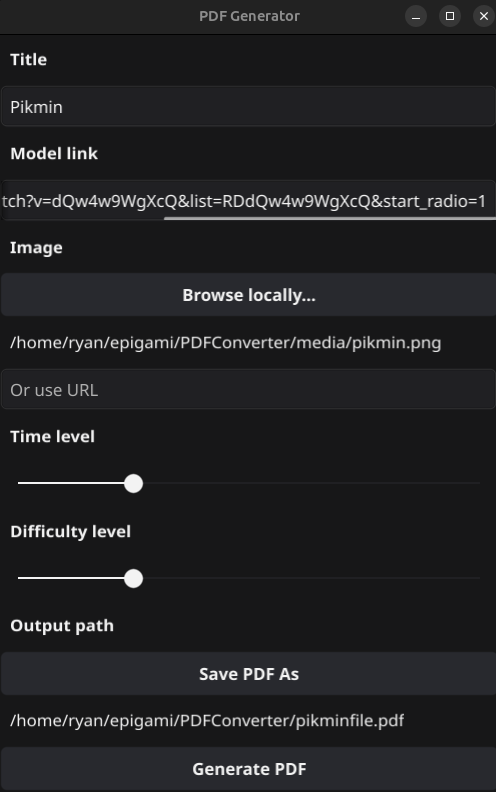
Développement en Go d'un outil d'automatisation personnel convertissant des liens web en QR codes, exportés directement dans un document PDF prêt à imprimer. Conçu spécifiquement pour ma section Epigami à Epitanime, ce projet a permis de simplifier la distribution des tutoriels et diagrammes d'origami aux membres et visiteurs.
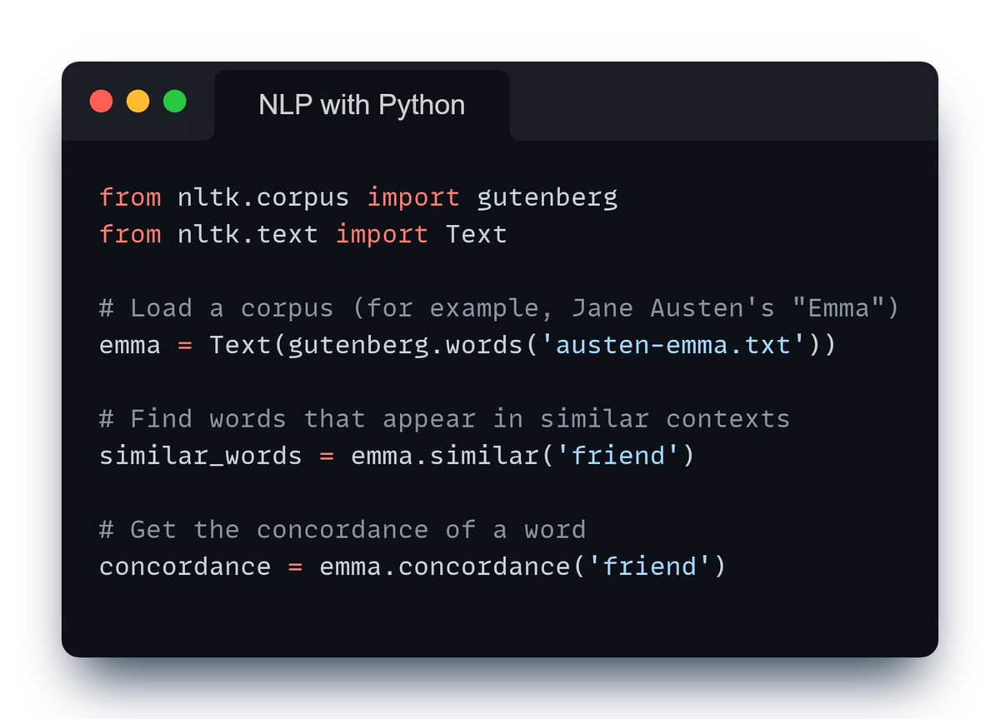
Développement d'un outil d'analyse textuelle en Python exploitant la bibliothèque Project Gutenberg et des modèles d'IA (NLP). Piloté par des flags en ligne de commande, le script automatise l'extraction de résumés, l'indexation par ID et l'analyse de données complexes sur les personnages d'œuvres comme Alice au pays des merveilles.
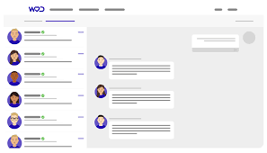
Développement d'une plateforme d'emploi inspirée de LinkedIn en partenariat avec WeLoveDevs, qui nous a fourni leur API officielle pour récupérer les offres. Ce projet m'a permis de concevoir un système complet de filtrage, de recherche dynamique et d'agrégation de données en temps réel pour les développeurs.
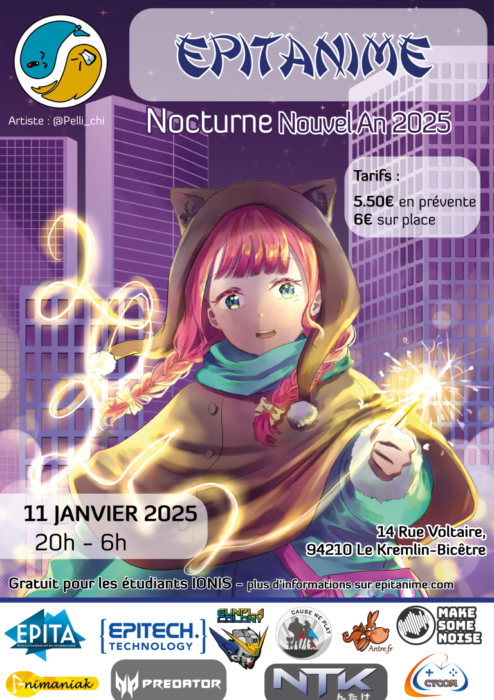
Une nuit blanche festive célébrant le passage à la nouvelle année autour de la culture japonaise, de tournois de jeux vidéo et de karaokés géants, dont j'ai encadré le bon déroulement en tant que responsable de section.
Voir le site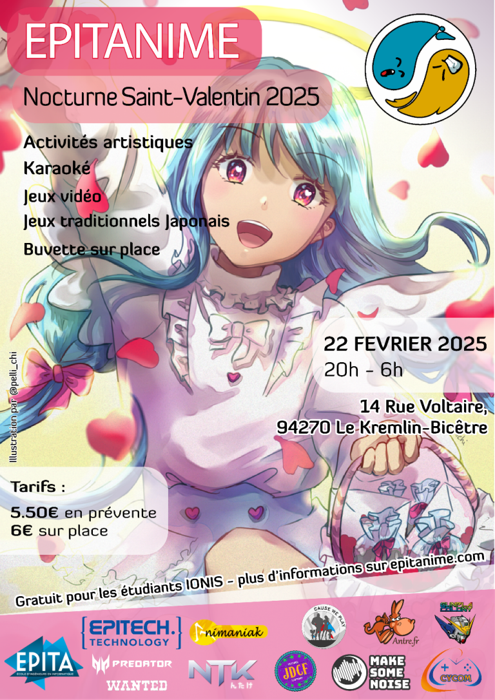
Un événement nocturne convivial qui rassemble la communauté autour d'animations thématiques originales et de jeux de société dans le thème de l'amour, une édition pour laquelle j'ai assuré la gestion d'un pôle d'activité majeur.
Voir le site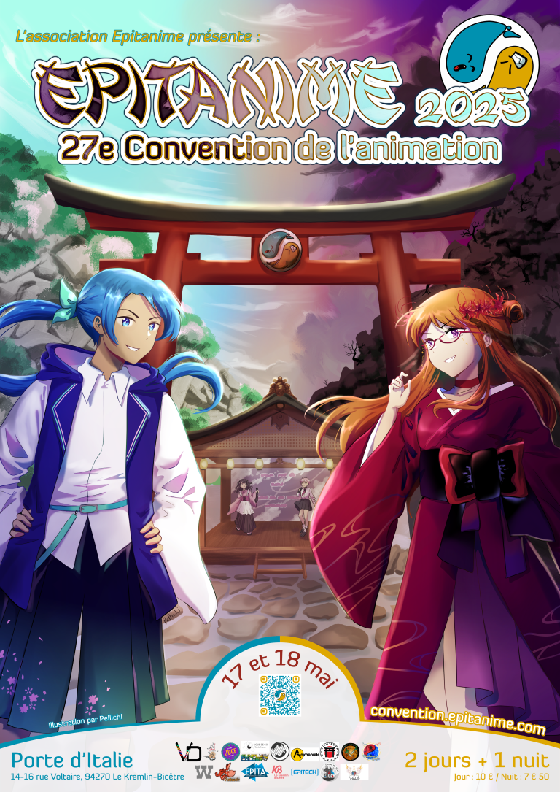
Le rassemblement annuel phare de l'association accueillant des milliers de visiteurs autour de stands, de conférences et de cosplay, où j’ai piloté l'organisation d'une zone clé de l'événement.
Voir le site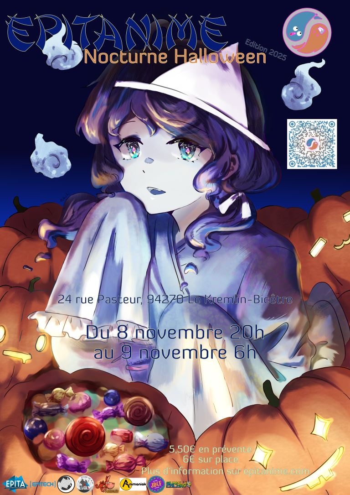
Une édition spéciale plongée dans une ambiance d'Halloween avec des activités et des animations que j'ai co-conçue et gérée de A à Z en tant qu'organisateur au sein du bureau.
Voir le site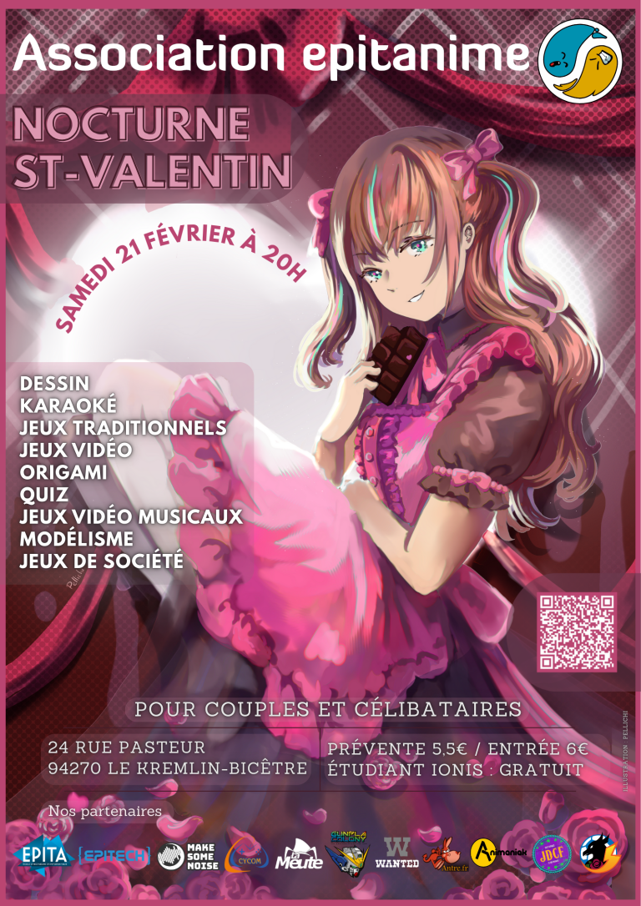
Une nuit immersive axée sur le thème de l'amour dont j'ai piloté la planification globale et le management des équipes pour cette nouvelle édition.
Voir le site